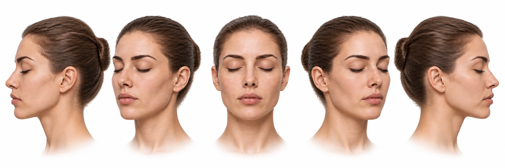
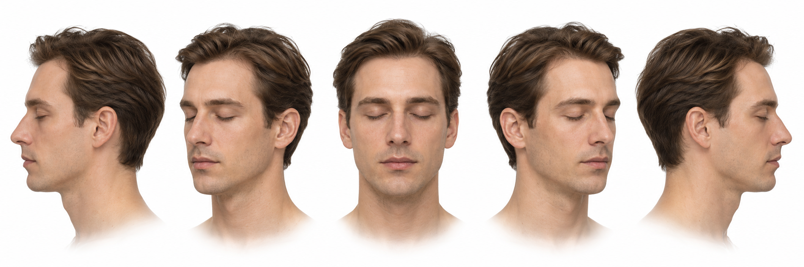

ROC · avaliação das dez vistas de pele
Primeira etapa: cinco imagens individuais por personagem. Clique em uma imagem para ampliar. As camadas internas ainda não foram produzidas e estas imagens não substituem o facial atual.
Confira se é a mesma pessoa em todas as vistas e se a cor permanece consistente. As guias são referências visuais; ainda existem pequenas diferenças de altura e enquadramento entre imagens.
Referências escolhidas
Mulher original

Homem de rosto fino

Abrir facial atual · Registro das gerações